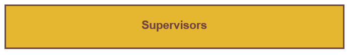
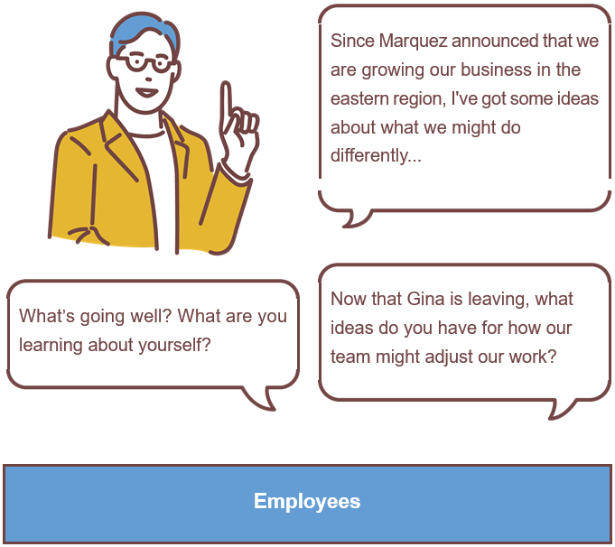
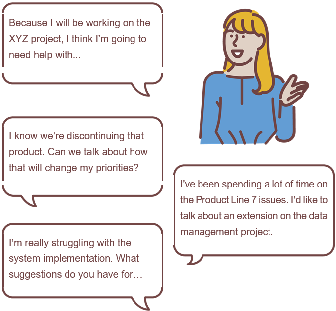
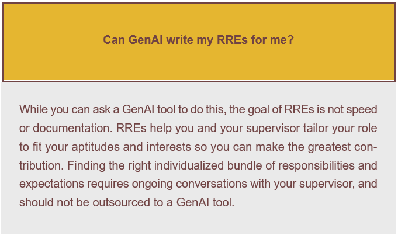

Questions for Reflection:
• Think about the last 6-12 months. How often did you recognize that you were having (or needed to have) an RRE conversation? What could you have done differently?
• How might your work and team results improve if you had RRE conversations more regularly?
• What RRE conversation(s) should you initiate now?